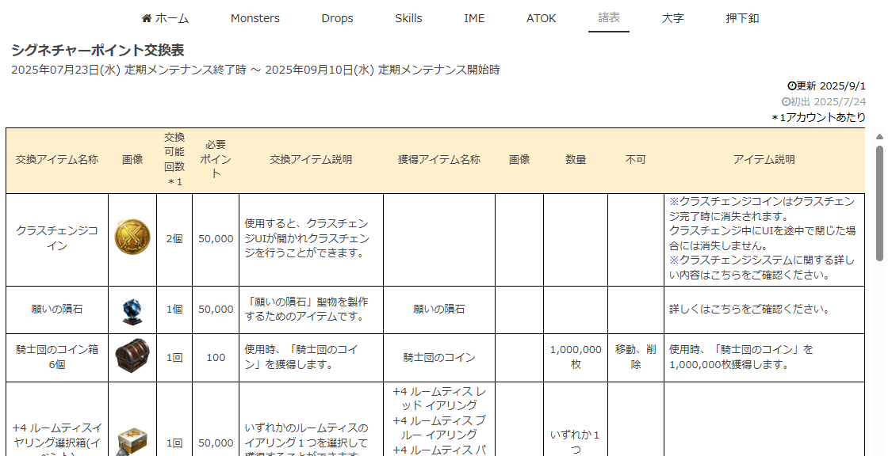
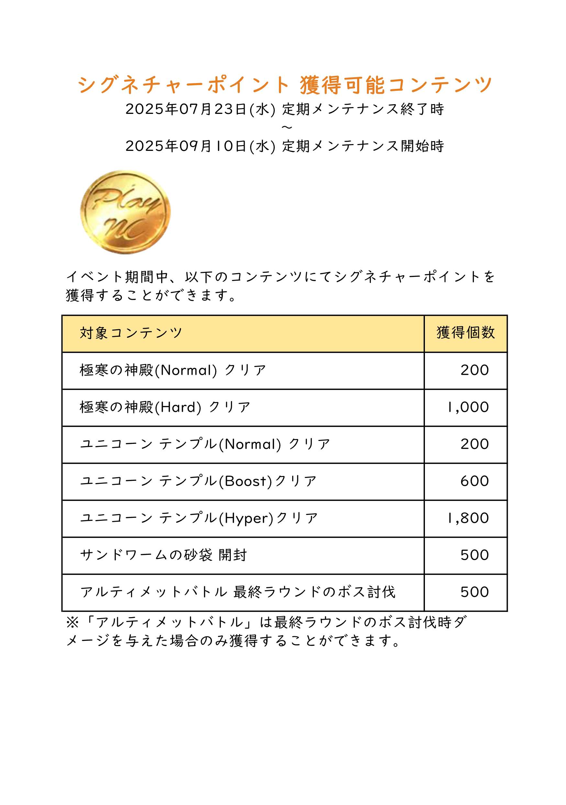
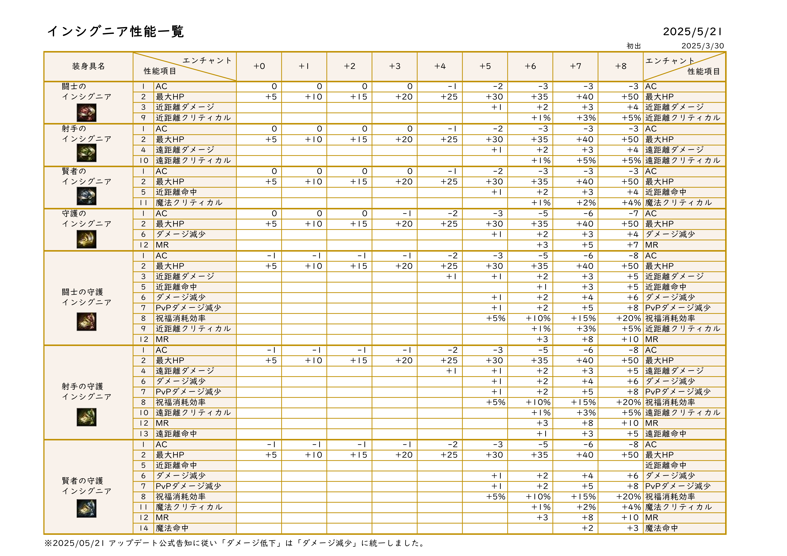
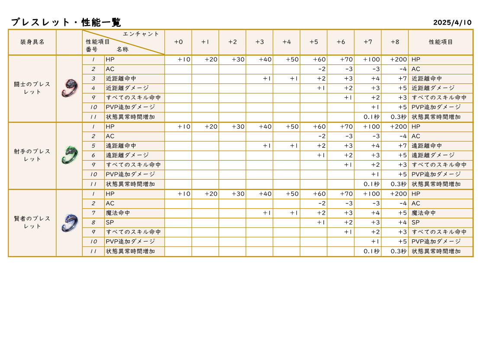
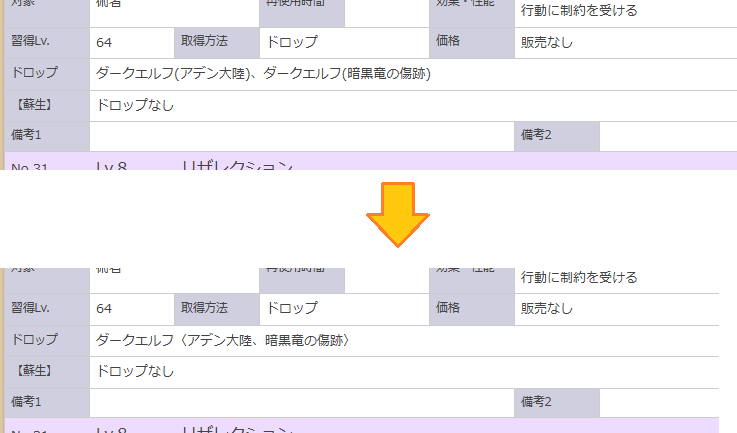
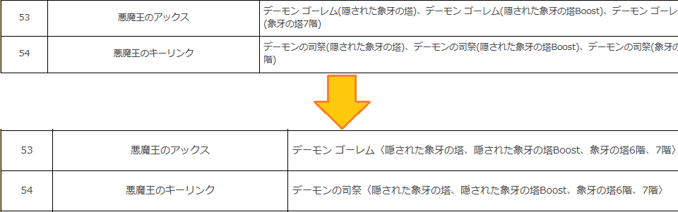
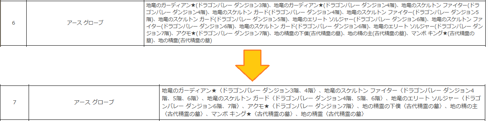
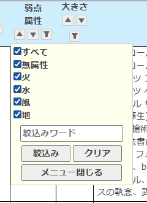
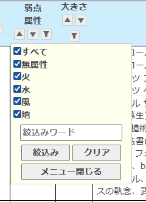
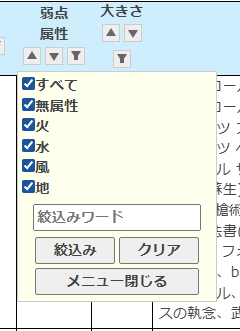

更新 2025年09月07日
勇猛のメダル交換表(テーブル)にモーダル表示
勇猛のメダル交換表の記事中、交換スキル名を語句自動リンクにしてスキル一覧情報をモーダル表示するようにしました。

更新 2025年09月03日
諸表に新規掲載：シグネチャーポイント交換表(テーブル)
シグネチャーポイント交換表【2025-7月期】を掲載しました。
更新 2025年09月02日
諸表に新規掲載：シグネチャーポイント獲得コンテンツ・交換表・アクセサリー性能表
諸表のページに以下の表を掲載しました。
- シグネチャーポイント獲得コンテンツ(画像)
 - アクセサリーの強化数別性能表
- 紋章(テーブル/画像)

- インシグニア(画像)
 - ルームティスイアリング(画像)

- ブレスレット(画像)
 - ルームティスのペンダント(画像)

- スナッパーのリング(画像)

- 紋章(テーブル/画像)
- シグネチャーポイント交換表【2025-7月期】(テーブル/画像)

更新 2025年09月01日
棲息場所と階層を集約(skills)
モンスター毎に棲息場所を集約、生息場所毎に階層を集約
skill(スキル一覧表)
- モンスター毎に棲息場所を集約、生息場所毎に階層を集約従来は「ダークエルフ(アデン大陸)、ダークエルフ(暗黒竜の傷跡)」であったものを「ダークエルフ〈アデン大陸、暗黒竜の傷跡〉」のように同じモンスター毎に集約した。
 - また「ケルベロス(メインランドのダンジョン4階)、ケルベロス(メインランドのダンジョン5階)」であったものを「ケルベロス〈メインランドのダンジョン4階、5階〉」のように同じ狩り場の階層を集約した。

更新 2025年08月29日
棲息場所と階層を集約(drops)
モンスター毎に棲息場所を集約、生息場所毎に階層を集約
Drops(Item2Monsterリスト)
- モンスター毎に棲息場所を集約、生息場所毎に階層を集約従来は「悪魔王のアックス：デーモン ゴーレム(隠された象牙の塔)、デーモン ゴーレム(隠された象牙の塔Boost)、デーモン ゴーレム(象牙の塔6階)、デーモン ゴーレム(象牙の塔7階)」であったものを「悪魔王のアックス ：デーモン ゴーレム〈隠された象牙の塔、隠された象牙の塔Boost、象牙の塔6階、7階〉のように同じモンスター毎に集約した。」
 - また「地竜のスケルトン ガード(ドラゴンバレー ダンジョン4階)、地竜のスケルトン ガード(ドラゴンバレー ダンジョン5階)、地竜のスケルトン ガード(ドラゴンバレー ダンジョン6階)」であったものを「地竜のスケルトン ガード〈ドラゴンバレー ダンジョン4階、5階、6階〉」のように同じ狩り場の階層を集約した。

更新 2025年08月27日
htmlとデータtsv分離。追記
マスターエクセルのデータをHTML直接記述からTSVファイル読み込みに変更しました。
モンスター一覧表
- 初期表示はtableがblankになりました。テキストファイル読み込みの[表示]ボタンをクリックしてください。

クリック後表示されるtableはソートとフィルター機能は従来と同様です。 - ドロップの一部修正
- ライカンスロープ：○武器強化スクロール×防具強化スクロール
- 亡者の看守：高級スキル選択箱、高級蘇生スキル選択箱追加
- ブラックナイト チーフ：技術書(アブソルート ブレイド：プリズン)、技術書(アブソルート ブレイド：プリズン)(蘇生)、高級スキル選択箱、高級蘇生スキル選択箱追加
- 記事欄の追記。出現場所と周期、アップデート付記
- アクモ ボス(★)：ドラゴンバレー ダンジョン7階＠6時間
- イフリート ボス(★)：火竜の棲処＠8時間
- オルクス ボス(★)：オークの森＠4時間
- カーツ ボス(★)：メインランド フィールド＠8時間
- カスパー ボス(★)：メインランドのダンジョン3階、4階＠6時間
- グレート ブラック エルダー ボス(★)：ドラゴンバレーフィールド＠毎日22時～23時
- サンドワーム ボス(★)：砂漠＠金曜日・土曜日21時
- ジャイアントドレイク ボス(★)：ドラゴンバレーフィールド＠12時間
- セマ ボス(★)：メインランドのダンジョン3階、4階＠6時間
- ゼロス ボス(★)：ドラゴンバレーフィールド＠12時間
- デーモン ボス(★)：象牙の塔7階＠4時間
- デスナイト ボス(★)：メインランドのダンジョン7階＠12時間
- デスナイト ボス(★)：2段階(マント)、メインランドのダンジョン7階＠12時間
- デスナイト ボス(★)：2段階(騎乗)、メインランドのダンジョン7階＠12時間
- ドッペルゲンガー ボス ボス(★)：鏡の森＠8時間
- ネクロマンサー ボス(★)：ドラゴンバレーフィールド＠6時間
- バルタザール ボス(★)：メインランドのダンジョン3階、4階＠6時間
- ビッグフット マーヨ ボス(★)：オーレン雪山＠8時間
- フェニックス ボス(★)：火竜の棲処＠12時間
- ブラックナイト チーフ ボス(★)(アデン大陸)：「騎士道」Up＝アブソルート ブレイド：プリズン、亡者の墓・ケント フィールド＠6時間
- ブラックナイト チーフ ボス(★)(亡者の墓)：「騎士道」Up＝アブソルート ブレイド：プリズン、亡者の墓・ケント フィールド＠6時間
- マイノ シャーマン ボス(★)：風竜の棲処＠8時間
- マンボ キング ボス(★)：古代精霊の墓＠6時間
- メルキオール ボス(★)：メインランドのダンジョン3階、4階＠6時間
- リカント ボス(★)：メインランド フィールド
- 看守長 タロス ボス(★)：ギラン監獄2階＠毎日21時
- 狂風のシャスキー ボス(★)：エルモア激戦地＠8時間
- 疾風のシャスキー ボス(★)：エルモア激戦地＠8時間
- 精霊監視者 ボス(★)：古代精霊の墓＠4時間
- 亡者の看守 ボス(★)：死の廃墟＠6時間
更新 2025年08月20日
絞り込み機能強化
フィルターボタンのダイアログに最小値と最大値のBOXを追加しました。
 

「Lv.」「AC」「MR」「HP」「MP」の各項目に最小値と最大値の入力欄を追加しました。
一方しか入力がない場合はそれ以上・それ未満を表示します。
なお、両方の入力がある場合はその範囲内のモンスターを表示します。
「狩り場リスト」「弱点属性」「大きさ」にはチェックボックスリストがあります。
モンスター一覧表
「Lv.」「AC」「MR」「HP」「MP」の各項目に最小値と最大値の入力欄を追加しました。
一方しか入力がない場合はそれ以上・それ未満を表示します。
なお、両方の入力がある場合はその範囲内のモンスターを表示します。
「狩り場リスト」「弱点属性」「大きさ」にはチェックボックスリストがあります。
更新 2025年08月05日
スキル箱化対応
「騎士道」アップデート 2024.11.20. 09:55 一部対応
スキル使用条件：装備を追加
モンスター一覧表
一部スキルを削除しスキル選択箱を登録 (＊下記[]のモンスターは未収録・狩り場図鑑ベース)- 一部のモンスターがドロップする唯一～高級等級の魔法書(蘇生含む)を削除しました。
- [アステリオス]、カヘル ヤヒ、[抑制したハルパス]、[ハルパス]
- 支配の塔各階層ボスモンスター11種(覚醒ボス含む)、傲慢の塔各階層ボスモンスター11種
- [ラザルス]、ヴァラカス、パプリオン、リンドビオル、アンタラス、[エルシャベ]、[クイーン センチュリオン]
- 等級別の魔法書(スキル)選択箱をドロップするモンスターを追加しました。
- 唯一スキル選択箱 [アステリオス3段階]、カヘル ヤヒ、[ハルパス]、[覚醒したデス グリムリーパー]
- 唯一蘇生スキル選択箱 [アステリオス3段階]、カヘル ヤヒ、[ハルパス]、[覚醒したデス グリムリーパー]
- 神話スキル選択箱 [アステリオス2/3段階]、カヘル ヤヒ、[ハルパス]、デス グリムリーパー(支配の塔)、[覚醒したデス グリムリーパー]、ヴァラカス、パプリオン、リンドビオル、アンタラス、憤怒のバルログ
- 神話蘇生スキル選択箱 [ハルパス]、デス グリムリーパー(支配の塔)、[覚醒したデス グリムリーパー]、ヴァラカス、パプリオン、リンドビオル、アンタラス、憤怒のバルログ
- 伝説のスキル選択箱 [アステリオス1/2/3段階]、カヘル ヤヒ、[ハルパス]、デス グリムリーパー、支配の塔各階層覚醒ボスモンスター11種、[エルシャベ]、憤怒のバルログ、[ラザルス]、ヴァラカス、パプリオン、リンドビオル、アンタラス
- 伝説蘇生スキル選択箱 [ハルパス]、支配の塔各階層ボスモンスター11種(覚醒ボス含む)、憤怒のバルログ、[ラザルス]、ヴァラカス、パプリオン、リンドビオル、アンタラス
- 英雄スキル選択箱 [アステリオス1/2/3段階]、カヘル ヤヒ、[ハルパス]、支配の塔各階層ボスモンスター11種(覚醒ボス含む)、憤怒のバルログ、ヴァラカス、パプリオン、リンドビオル、アンタラス、[ラザルス]、デス グリムリーパー(傲慢の塔最上階)、[エルシャベ]
- 英雄蘇生スキル選択箱 [ハルパス]、支配の塔各階層ボスモンスター11種(覚醒ボス含む)、憤怒のバルログ、ヴァラカス、パプリオン、リンドビオル、アンタラス、傲慢の塔各階層ボスモンスター11種、[ラザルス]、[クイーン センチュリオン]
- 希少スキル選択箱 [アステリオス1/2/3段階]、カヘル ヤヒ、[抑制したハルパス]、支配の塔各階層ボスモンスター11種(覚醒ボス含む)、ヴァラカス、パプリオン、リンドビオル、アンタラス、傲慢の塔各階層ボスモンスター11種、[ラザルス]
- 希少蘇生スキル選択箱 [抑制したハルパス]、支配の塔各階層ボスモンスター11種(覚醒ボス含む)、ヴァラカス、パプリオン、リンドビオル、アンタラス、傲慢の塔各階層ボスモンスター11種、[ラザルス]
- 高級スキル選択箱 [アステリオス1/2/3段階]、カヘル ヤヒ、[抑制したハルパス]、デス グリムリーパー(支配の塔)、[覚醒したデス グリムリーパー]、傲慢の塔各階層ボスモンスター11種
- 高級蘇生スキル選択箱 [抑制したハルパス]、デス グリムリーパー(支配の塔)、[覚醒したデス グリムリーパー]、傲慢の塔各階層ボスモンスター11種
ドロップ一覧表
一部スキルを削除しスキル選択箱を登録 (＊上記[]のモンスターは未収録・狩り場図鑑ベース)スキル一覧表
スキル選択箱以外の従来ドロップとスキル選択箱を展開したスキルアイテムを統合。スキル使用条件：装備を追加
更新 2025年07月10日
スキル一覧表追加・ページ体裁調整
スキル一覧表を追加
スキル一覧表ドロップとチュートリアルクエストNPCから購入などスキルの入手方法の表を作成。- Skillと入手方法の詠唱コストや効果・能力などをブロックで表示
- 表の概要
- スキルテーブルTSV本体
- skill_domain_identification：通し番号やスキル名称
- skill_domain_eligible_character：習得クラスとエルフ属性
- skill_domain_tendency：アクティブ/パッシブ、性向など
- skill_domain_resource：詠唱コスト消費HPMPと材料・触媒
- skill_domain_effect：スキルの効果持続時間、対象、効果・性能など
- skill_domain_acquisition：習得条件。習得レベル、取得方法、NPC価格
- skill_domain_dropmob：ドロップモンスター(レギュラー・蘇生)
- skill_domain_notes：備考
- 習得レベルやドロップモンスターに未収載があります。
覚えていないスキルはスキルウィンドウの説明のまま。
持っていないスキルは魔法書や書板などアイテム説明に書いてある情報などが未収載
- 折りたたみ表示・クラス表示ボタン
- 初期表示は全件折りたたみ
- クラス名ボタンをクリックするとそのクラスのみを表示
- 完全一致はクラス固有スキル、部分一致は共通一般魔法を含めたスキルを表示
ページの体裁調整
ページのリンクの追加。スタイルの変更。更新 2024年11月21日
漢字変換辞書テキストを更新。ページの体裁調整
漢字変換辞書テキストを更新
リネージュリマスターItemMonster辞書2024(ATOK)リネージュリマスターItemMonster辞書2024(IME)
ページの体裁調整
辞書更新履歴をそれぞれの辞書ページに移動 CSS、アイコンなどの調整更新 2024年11月13日
DropListを公開
MonsterListのアイテムからの逆引き
- DropItemとMonsterの2列
- Drop：アイテム名の辞書よみで並んでいます
- Monster：モンスター名（生息地）です。「★」はボスです。
- 表示順など
- 初期表示は「b-」「c-」「(蘇生)」「魔法書(」などの接頭語や接尾語を除いた名称で並べています。
例：「精霊の水晶(ハリケーン)」は【せいれいのすいしょう～】ではなく【はりけーん】の場所に並んでいます。 - 「－ドロップなし」「アデナ」も入っています。
- 一つのアイテムに名前が同じモンスターが含まれることがあります。
- MonsterListと同じようにフィルターが使えます。「フェンサーの書」を指定してスキルだけを表示したりできます。
- 初期表示は「b-」「c-」「(蘇生)」「魔法書(」などの接頭語や接尾語を除いた名称で並べています。
更新 2024年11月11日
漢字変換辞書テキストを更新
リネージュリマスターItemMonster辞書2024(ATOK)の更新
リネージュリマスターItemMonster辞書2024(IME)の更新
リネージュリマスターItemMonster辞書2024(IME)の更新
更新 2024年10月30日
モンスターリスト/漢字変換辞書テキストを公開
モンスターリスト
狩場図鑑を入力していた資料を一覧できるようにしたものです漢字変換辞書テキスト
狩り場図鑑の入力中正しい名称が面倒になってきたので副産物のIMEとATOKの辞書も公開。略語やゲーム用語、顔文字は収録していません。狩場図鑑の「場所」「モンスター名」「ドロップアイテム名」を収録しています。
更新履歴
- 2025年09月02日諸表に追加掲載(etc)！
- 2025年09月02日諸表に新規掲載(etc)
- 2025年09月01日棲息場所と階層を集約(skills)
- 2025年08月29日棲息場所と階層を集約(drops)
- 2025年08月27日htmlとデータtsv分離。追記
- 2025年08月20日絞り込み機能強化。Monsters
- 2025年08月05日スキル選択箱対応。Monsters・Drops
- 2025年07月10日スキル一覧表追加・ページ体裁調整
- 2024年11月21日ATOK/IME辞書テキストファイル更新。ページ体裁の調整
- 2024年11月13日アイテムからドロップするモンスターの一覧を追加
- 2024年11月11日ATOK/IME辞書テキストファイル更新
- 2024年10月30日初公開